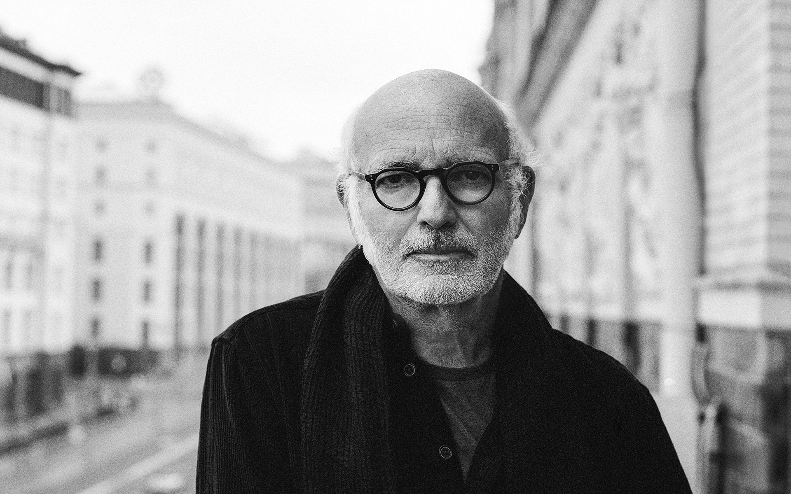

|  |
BioLudovico Maria Enrico Einaudi OMRI (Italian: [ludoˈviːko eiˈnaudi] ⓘ; born 23 November 1955) is an Italian pianist and composer. Trained at the Conservatorio Verdi in Milan, Einaudi began his career as a classical composer, later incorporating other styles and genres such as pop, rock, folk, and world music.[1]Einaudi has composed the scores for a number of films and television productions, including This Is England, The Intouchables, I'm Still Here, the TV miniseries Doctor Zhivago, and Acquario (1996), for which he won the Grolla d'oro. His music was used as the score for the Golden Globe and Academy Award-winning films Nomadland and The Father.[2]
He has also released a number of solo albums for piano and other instruments, notably I Giorni in 2001,
Nightbook in 2009, and In a Time Lapse in 2013. On 1 March 2019, Einaudi announced a seven-part project
named Seven Days Walking, which was released over the course of seven months in 2019. In 2005, he was appointed an
Officer of the Order of Merit of the Italian Republic.[3]
Early life and educationEinaudi was born in Turin, Piedmont.[4] His father, Giulio Einaudi, was a publisher[5] working with authors including Italo Calvino and Primo Levi, and founder of Giulio Einaudi Editore.[6] His paternal grandfather, Luigi Einaudi, was President of Italy between 1948 and 1955. His mother, Renata Aldrovandi, played the piano to him as a child.[7] Her father, Waldo Aldrovandi, was a pianist, opera conductor, and composer who emigrated to Australia after World War II.[5]Einaudi started composing music as a teenager, first writing by playing a folk guitar.[8] He began his musical training at the Conservatorio Verdi in Milan, obtaining a diploma in composition in 1982.[9] That same year he took an orchestration class taught by Luciano Berio and was awarded a scholarship to the Tanglewood Music Festival.[10] According to Einaudi, "[Luciano Berio] did some interesting work with African vocal music and did some arrangements of Beatles songs, and he taught me that there is a sort of dignity inside music. I learnt orchestration from him and a very open way of thinking about music."[1][8] He also learned by collaborating with musicians such as Ballaké Sissoko from Mali and Djivan Gasparyan from Armenia.[8] His music is ambient, meditative, and often introspective, drawing on minimalism and contemporary pop.[10] |